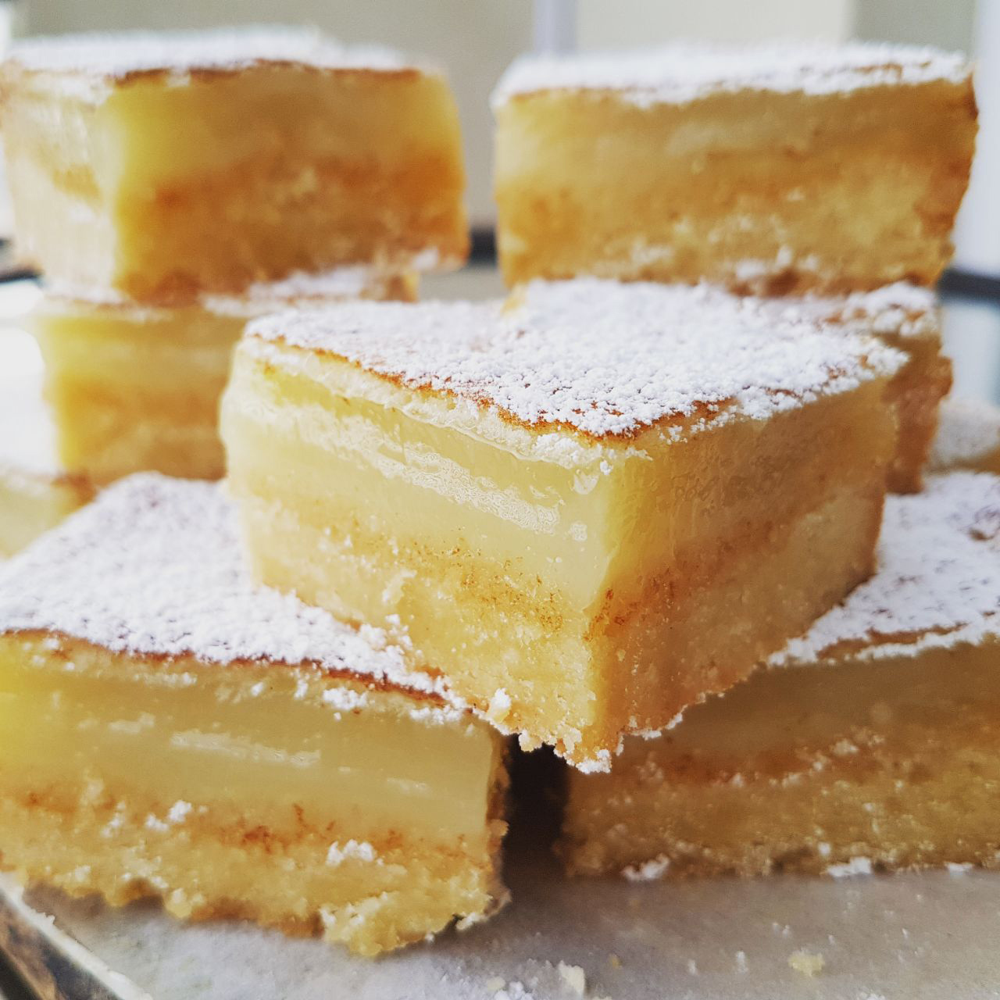

Lemon Bars

36 servings
Tart, rich and perfection, all rolled into one! Wow your friends with this simple lemony recipe.
This recipe is based off of this recipe.
Ingredients
- 1cup butter, softened
- 1/2cup white sugar
- 2cups all-purpose flour
- 4 eggs
- 1 1/2cups white sugar
- 1/4cup all-purpose flour
- 2 lemons, juiced
Directions
- Preheat oven to 350 degrees F (175 degrees C).
-
In a medium bowl, blend together softened butter, 2 cups flour and 1/2 cup sugar.
Press into the bottom of an ungreased 9x13 inch pan.
-
Bake for 15 to 20 minutes in the preheated oven, or until firm and golden.
In another bowl, whisk together the remaining 1 1/2 cups sugar and 1/4 cup flour.
Whisk in the eggs and lemon juice. Pour over the baked crust.
-
Bake for an additional 20 minutes in the preheated oven. The bars will firm up as they cool.
For a festive tray, make another pan using limes instead of lemons and adding a drop of green food coloring to give a very pale green.
After both pans have cooled, cut into uniform 2 inch squares and arrange in a checker board fashion.